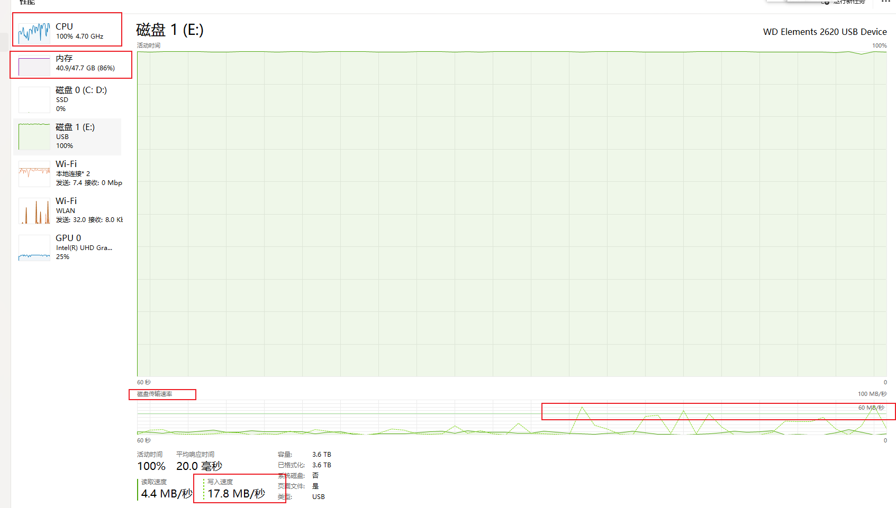

1. Andriod.mk
1.1. 加日志
https://blog.csdn.net/weixin_44008788/article/details/127575769
https://blog.csdn.net/AS520213211314/article/details/78190224 makefile 打印变量的值
2. Andriod.bp
Android.bp的出现就是为了替换Android.mk文件；bp跟mk文件不同，它是纯粹的配置，没有分支、循环等流程控制，不能做算数逻辑运算，如果需要控制逻辑，那么只能通过Go语言编写
3. 转换
https://blog.csdn.net/qq_18906227/article/details/120737147
4. 编译预置库的 Android.mk 文件
include $(CLEAR_VARS)
LOCAL_MODULE := mi_display
LOCAL_MODULE_CLASS := SHARED_LIBRARIES
LOCAL_MODULE_SUFFIX := .so
LOCAL_STRIP_MODULE := false
LOCAL_MULTILIB := 64
LOCAL_MODULE_TAGS := optional
LOCAL_SRC_FIFLES := 64/mi_display.so
LOCAL_MODULE_PATH := $(PRODUCT_OUT)/system/lib64
include $(BUILD_PREBUILT)
作用是将 64/mi_display.so 编译预置到 $(PRODUCT_OUT)/system/lib64 目录下去
5. 所有属性

https://ci.android.com/builds/submitted/10761852/linux/latest/view/soong_build.html
6. 编译 性能瓶颈的分析
变量： cpu 、 mem、磁盘、编译参数-j24
make -j24:
可见, （1） cpu大部分时间在高水位
（2）mem有剩余
（3）磁盘长时间运行，但是都是低水位 ---------------> 结论：磁盘可以用差一些，不是瓶颈
-------------------> 所以优化方向：调节-j24 到 32，尽量让mem和CPU都充分使用
